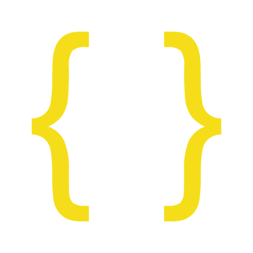

EYREIN PRODUCT
Eyrein Product

JSONProjet réalisé dans le cadre de mon stage de première année de BTS SIO. Outil Python avec API Flask pour télécharger et organiser automatiquement les fiches produits d'une entreprise (Eyrein) depuis leur site web.
🔧 Fonctionnalités principales :
- Téléchargement automatique Extraction des fiches produits depuis le site web d'Eyrein
- Organisation intelligente Classement automatique des fichiers par produits
- Archivage ZIP Création de fichiers ZIP organisés par produit
- API Flask Interface de programmation pour l'intégration avec d'autres systèmes
- Gestion JSON Traitement et structuration des données produits
- Automatisation complète Processus de téléchargement et d'organisation entièrement automatisé